교통기사 (2020-08-22 기출문제)
1과목: 교통계획
1. 주차수요 추정방법에 대한 설명으로 틀린 것은?
- p계수법의 경우 p계수에 포함되는 변수가 너무 많아 그 값들을 얻기 어렵다는 단점이 있다.
- 원단위법은 장기간의 주차수요나 주차특성이 다양한 건물의 주차수요를 추정하는데 높은 신뢰성을 갖는다.
- 단순추정법은 주자의 수요와 공급에 영향을 주는 과거 자료를 이용하여 주차수요를 추정하는 방법이다.
- 누적주차대수법은 미시적인 추정방법으로서 유사한 주차특성을 나타내는 건물 또는 지구의 주차수요를 측정하는데 용이하다.
(정답률: 69%)

2. 화물교통조사 시 조사항목이 아닌 것은?
- 물류시설
- 화물 물동량
- 화물차량 동행인
- 화물차 운행실태
(정답률: 95%)
3. 다음 도로의 운영 방법 중 도로구간을 홀수차로로 구획하고 중앙의 한 개 차로를 좌회전 교통류로 처리하여 회전교통류에 의해 직진교통류가 방해받음으로써 발생하는 링크 및 교차로의 용량저하현상을 감소시키는 효과가 있는 것은?
- 가변차로제
- 능률차로제
- 일방차로제
- 우선차로제
(정답률: 76%)
4. 다음 중 대중교통 수단 운영에 따른 장점으로 가장 거리가 먼 것은?
- 에너지 절약
- 교통 혼잡 감소
- 환경 문제 감소
- 주차 수요 유발
(정답률: 95%)
5. 세부가로 교통량 추정에 앞서 개략적 노선 수요 파악을 위한 네트워크로서 주로 교통존 중심(Zone Centroid)간을 연결하는 많은 삼각형으로 구성하는 네트워크는?
- 거미줄망도(Spider Web)
- 검사선(Screen Line)
- 교통지구도(Zone Map)
- 가로망도(Highway Network)
(정답률: 74%)
6. 두 지역을 연결하는 도로 A, B가 있다. 두 도로의 승용차 통행비용함수가 다음과 같을 때 Wardrop의 제1법칙에 의한 두 도로 간 통행배정(배분)량이 모두 옳은 것은?
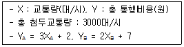
- XA=1799, XB=1201
- XA=1201, XB=1799
- XA=1600, XB=1400
- XA=1400, XB=1600
(정답률: 62%)
7. 교통수요예측기법을 집계형 모형과 비집계형 모형으로 분류할 때, 집계형 모형이 설명하려고 하는 변수는?
- 개인의 통행수
- 개인의 목적지
- 개인의 이용수단
- 평균가구특성
(정답률: 55%)
8. 교통사업의 경제성 분석 시의 고려사항 중 공공자원의 사회적 기회 비용을 의미하는 것은?
- 소비자잉여
- 잠재가격
- 할인율
- 인플레이션
(정답률: 66%)
9. 지능형교통체제의 적용 분야가 아닌 것은?
- CVO
- AVCS
- APTS
- QRS
(정답률: 76%)
10. 다음 교통계획 대안평가 방법 중 성적이 다른 하나는?
- AHP 방법
- 순현재 가치 분석법
- 내부수익률 분석법
- 초기년도 수익률 분석법
(정답률: 86%)
11. 통행배정 방법 중 용량제약(Capacity Constaint) 방식을 사용하지 않는 것은?
- 분할배정법(Incremental Assignment)
- 반복배정법(Iterative Assignment)
- 전량배정법(All-or-Nothing Assignment)
- 평형배정법(Equilibrium Assignment)
(정답률: 87%)
12. 통행발생모형 중 다중회귀분석모형의 도출과정에 대한 설명으로 틀린 것은?
- 상관관계 행렬을 조사하여 독립변수들간의 중복도를 파악하고 종속변수와의 관계를 파악한다.
- 결점계수 값을 검토한다.
- 각 변수들의 계수 부호 및 계수 크기의 타당성 검토한다.
- 각 변수들의 계수는 통계적으로 유의하다고 가정하므로, 통계적 검증을 생략한다.
(정답률: 89%)
13. 다음 중 교통의 3대 요소로 가장 거리가 먼 것은?
- 교통주체
- 교통수단
- 교통시설
- 교통계획
(정답률: 86%)
14. 순현재 가치(NPV)분석법에 대한 설명이 틀린 것은?
- 교통사업의 경제성 분석 시 보편적으로 사용한다.
- 편익을 비용으로 나눈 비율의 결과가 가장 큰 대안을 선택하는 방법이다.
- 할인율을 적용하여 장래의 비용, 편익을 현재 가치화한다.
- 대안 선택에 있어서 정확한 기준을 제시하고 다른 대안과의 비교가 용이하다.
(정답률: 75%)
15. 다음 중 다른 교통수단과 비교하여 지하철이 갖는 장점으로 가장 거리가 먼 것은?
- 대량성
- 정시성
- 안전성
- 기동성
(정답률: 73%)
16. 여객통행 기·종점(O/D)조사의 주된 목적은?
- 통행 여객의 연령대를 파악하기 위해
- 통행의 분포상태를 파악하기 위해
- 차종별 분포를 파악하기 위해
- 차종별 통행비용을 파악하기 위해
(정답률: 89%)
17. 일반적인 도시교통의 특성으로 틀린 것은?
- 대량수송을 필요로 한다.
- 도심과 같은 특정지역에 통행이 집중된다.
- 출발지와 목적지를 연결하는 장거리 교통이 대부분이다.
- 통행로, 교통수단, 터미널 등에 의해서 승객에게 서비스를 제공한다.
(정답률: 88%)
18. 교통존의 설정에 대한 설명으로 틀린 것은?
- 다양한 토지이용이 하나의 존에 포함되도록 한다.
- 행정구역과 가급적 일치시킨다.
- 간선도로는 존 경계와 일치하도록 한다.
- 혼잡한 지역의 경우 혼잡하지 않은 지역에 비해 존의 크기가 작아야 한다.
(정답률: 82%)
19. 다음 중 장기교통계획에 비해 교통체계관리기법(TSM)이 갖는 특징으로 틀린 것은?
- 단기적 편익이 발생한다.
- 주로 소규모 지역을 대상으로 한다.
- 다양한 교통수단을 고려하여 대안을 선택한다.
- 문제 상황이 명확히 정의되고 관측이 가능하다.
(정답률: 62%)
20. 둘 이상의 기능을 합한 복합교통 시스템으로서, 자동차에 사람이나 화물을 실은 채 철도로 운반 하는 시스템은?
- Car Ferry
- Piggyback System
- Dual-mode Bus System
- Tube Transportation System
(정답률: 83%)
2과목: 교통공학
21. 지점 속도의 빈도 분포에 관한 설명으로 옳지 않은 것은?
- 정규분포에서 속도의 중위값은 항상 50% 속도와 일치하지 않는다.
- 85% 속도는 그 교통류 내에서 합리적인 속도의 최대값을 나타낸다.
- 최빈 10km/h 속도는 10km/h 속도 범위안에서 빈도수가 가장 많은 속도 범위를 나타낸다.
- 보통 85% 속도를 실제 현장의 도로 조건에 적합한 교통운영계획을 세우는데 기준 속도로 삼는다.
(정답률: 63%)
22. 밀도가 70대/km, 공간평균속도가 35km/h일 때 교통량은/
- 500대/시
- 1,200대/시
- 2,000대/시
- 2,450대/시
(정답률: 85%)
23. 한 접근로에서 2가시(A, B) 상태의 교통류가 관측되었다. A상태의 교통류는 200대/시의 교통량과 160대/km의 밀도를 가지며, B상태의 교통류는 350대/시의 교통량과 260대/km의 밀도를 가질 때, 두 교통류에서 발생하는 충격파의 속도는?
- 0.03km/h
- 0.67km/h
- 1.50km/h
- 2.52km/h
(정답률: 67%)
24. 신호교차로 용량분석의 이상적인 조건으로 옳지 않은 것은?
- 차로폭은 2.5m 이상
- 교통류는 직진이며, 모두 승용차로 구성
- 접근부 정지선의 상류부 75m 이내에 노상주·정차시설 없음
- 접근부 정지선의 상류부 60m 이내에 진출입 차량이 없을 것
(정답률: 83%)
25. 어느 대기행렬시스템 특성을 「M/D/1」으로 표현한 경우, 이 시스템에 대한 설명으로 옳은 것은?
- 도착확률분포 : random, 서비스율 : deterministic, 서비스기관의 수 : 1개소
- 도착확률분포 : deterministic, 서비스율 : random, 서비스기관의 수 : 1개소
- 도착률 : deterministic, 대기행렬상태 : random, 서비스기관의 수 : 1개소
- 도착률 : random, 대기행렬상태 : drive through, 서비스기관의 수 : 1개소
(정답률: 78%)
26. 교통류 차두시간 및 차량도착 특성의 확률분포에 대한 설명으로 옳지 않은 것은?
- 분산/평균비가 1.0보다 현저히 클 때 음이항분포를 사용하면 좋다.
- 교통량 계수기간 동안 교통량의 변화가 없을 경우 음이항분포가 사용된다.
- 분자/평균비가 1.0보다 작고 교통량이 많은 교통류에 이항분포를 사용하면 잘 맞는다.
- 얼랑(Erlang) 분포에서는 차두시간이 최소허용시간보다 작을 확률이 0이 아닌 아주 작은 값을 갖는다고 본다.
(정답률: 55%)
27. 아래 고속도로 기본구간의 용어에 대한 설명 중 ㉠, ㉡에 들어갈 말로 알맞은 것은?
- ㉠ : 3%, ㉡ : 200m
- ㉠ : 3%, ㉡ : 500m
- ㉠ : 5%, ㉡ : 200m
- ㉠ : 5%, ㉡ : 500m
(정답률: 68%)
28. 5분 동안 어느 지점을 통과하는 차량 10대의 속도를 측정한 결과가 아래와 같을 대 공간 평균 속도는?
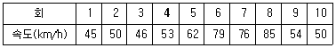
- 약 50km/h
- 약 54km/h
- 약 58km/h
- 약 62km/h
(정답률: 69%)
29. 가변차로제에 대한 설명으로 옳은 것은?
- 교통사고 발생률이 급감한다.
- 교통통제시설 설치비가 많이 소요된다.
- 대중교통노선의 조정이 반드시 필요하다.
- 교통량이 많은 방향에 대한 용량 부족이 초래된다.
(정답률: 74%)
30. 황색신호 시간 길이의 결정에 관계없는 것은?
- 교차로의 폭
- 신호현시의 수
- 차량의 임계감속도
- 운전자의 반응시간
(정답률: 61%)
31. 시공도(Time-Space Diagram)에서 확인할 수 없는 사항은?
- 진행대폭
- 신호 옵셋
- 개별차량 속도
- 신호교차로 용량
(정답률: 50%)
32. 통행시간 및 지체조사 방법으로 성격이 다른 하나는?
- 이동차량 조사법
- 평균속도 주행법
- 교통류 적용 주행법
- 차량번호판 해독법
(정답률: 74%)
33. 차량이 움직이는 과정에서 발생하는 저항에 대한 설명으로 옳지 않은 것은?
- 경사저항은 차량무게가 경사로 윗방향으로 작용한다.
- 구름저항은 구르는 타이어와 노면 간의 마찰에 의해 발생한다.
- 곡선저항은 차량이 곡선 모양의 길을 따라 움직일 때 발생한다.
- 공기저항은 버스나 트럭의 저항이 일반 승용차에 비하여 많다.
(정답률: 87%)
34. 고속도로의 엇갈림 구간에 대한 설명으로 옳지 않은 것은?
- 엇갈림 구간의 효과척도로는 공간 평균속도를 사용한다.
- 엇갈림 구간의 길이는 물리적인 고어부 사이의 거리로 한다.
- 엇갈림 구간의 교통류 특성에 영향을 미치는 도로 기하구조 요소는 엇갈림구간의 형태, 길이, 폭(차로 수)이다.
- 엇갈림 구간의 길이는 본선-연결로 엇갈림 구간의 경우 최소 200m를 넘게 하는 것이 통행 안전상 바람직하다.
(정답률: 59%)
35. 일반적인 차량추종모형에서 입력 값으로 고려되지 않는 변수는?
- 차량 속도
- 차량 위치
- 마찰 계수
- 운전자 민감도
(정답률: 37%)
36. 차량 운행 중 외부자극에 대한 인간의 신체적 반응 과정인 PIEV 과정에 속하지 않는 것은?
- 식별
- 반응
- 인지
- 회피
(정답률: 90%)
37. 승용차환산계수(PCE)에 대한 설명으로 옳은 것은?
- 교통류 내 대형차의 혼입 비율을 말한다.
- 일반지형에서 구름지나 산지보다 평지에서 더 큰 값을 가진다.
- 교통 구성 뿐만 아니라 종단 경사에도 영향을 받는다.
- 도로 상에서 대형차 1대가 소행차 몇 대와 길이가 같은가를 나타낸다.
(정답률: 43%)
38. 교통량(q), 속도(u), 밀도(k)의 상관관계(q=u×k)에서 속도의 의미는?
- 설계속도
- 지점속도
- 공간평균속도
- 시간평균속도
(정답률: 69%)
39. 아래와 같은 [조건]에서 지방부 2차로 도로의 어떤 구간에서의 지점 속도를 조사할 때 필요한 최소 표본의 수는?
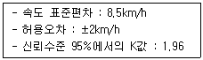
- 43개
- 52개
- 61개
- 70개
(정답률: 74%)
40. 아래 [조건]에서의 유효녹색시간은?
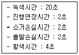
- 18초
- 20초
- 22초
- 24초
(정답률: 70%)
3과목: 교통시설
41. 평면교차로 설계의 기본원리로 틀린 것은?
- 상층의 회수를 최소화 시킨다.
- 분·합류를 단순화시키고 일관성을 유지한다.
- 교통량이 많고 속도가 높은 교통류에 우선권을 부여한다.
- 삼층지점의 면적을 최대화시킨다.
(정답률: 81%)
42. 다음 중 1대당 최소 주차 소요 면적이 가장 큰 각도 주치 형식은? (단, 차종은 경형을 기준으로 하며 전진주차 방식이다.)
- 30도 주차
- 45도 주차
- 60도 주차
- 90도 주차
(정답률: 79%)
43. 아래의 설명에 해당하는 회전교차로의 기하구조 구성요소는?
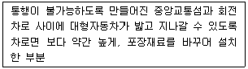
- 퍼짐(Flare)
- 화물차턱
- 분리교통섬
- 연석돌출부
(정답률: 73%)
44. 보도의 유효폭 기준이 옳은 것은? (단, 지방지역의 도로와 도시지역의 국지도로 중 지형상 불가능하거나 기존 도로의 증설·개설 시 불가피하다고 인정되는 경우는 고려하지 않는다.)
- 최소 1.0m 이상
- 최소 2.0m 이상
- 최소 3.0m 이상
- 최소 4.0m 이상
(정답률: 86%)
45. 곡선도로에 설치하는 완화곡선의 종류 중 일반적으로 이용되는 클로소이드 곡선의 기본식이 옳은 것은? (단, A : 클로소이드 곡선의 파라미터, L : 클로소이드 곡선의 길이, R : 단곡선의 곡선반경)
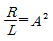
- R + L = A2
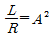
- R × L = A2
(정답률: 54%)
46. 설계속도가 80km/h인 평지 도로에서 노면과 타이어의 마찰계수가 0.27일 때, 최소 정지시거는? (단, 운전자 반응시간은 2.5초이다.)
- 약 66m
- 약 93m
- 약 107mm
- 약 149m
(정답률: 78%)
47. 각도주차 방식에 비하여 평행주차 방식이 갖는 특징으로 옳은 것은?
- 주차 시 다른 자동차의 간섭을 적게 받는다.
- 자동차의 주차배열이 비교적 질서 정연하다.
- 측방의 주차면을 병렬로 이용함으로써 주차용량을 증대시킬 수 있다.
- 소형차가 주차할 때 차체 길이의 차이를 유효하게 이용할 수 있는 장점이 있다.
(정답률: 53%)
48. 고속도로의 설계속도가 100km/h일 때, 버스 정류장의 최소 길이 기준으로 옳은 것은?
- 520m
- 470m
- 420m
- 310m
(정답률: 56%)
49. 다른 도로와의 연결허가 금지구간 기준이 옳지 않은 것은?
- 교차로 주변의 변속차로 등의 설치 제한거리 이내의 구간
- 교량 등의 시설물과 근접되어 변속차로를 설치할 수 없는 구간
- 버스정차대, 측도 등 주민편의시설이 설치되어 이를 옮겨 설치할 수 없는 구간
- 종단경사가 산지에서 5%를 초과하는 구간
(정답률: 70%)
50. 설계속도에 대한 설명으로 틀린 것은?
- 자유 속도에서 교통류 내의 내부마찰과 도로변마찰로 인한 지체를 감안한 속도이다.
- 차량의 주행에 영향을 미치는 도로의 물리적 형상을 상호 관련시키기 위해 선택된 속도이다.
- 도로 설계요소의 기능이 충분히 발휘될 수 있는 조건 하에서 운전자가 도로의 어느 구간에서 쾌적성을 잃지 않고 유지할 수 있는 적정 속도이다.
- 도로의 기하구조를 결정하는데 기본이 된다.
(정답률: 68%)
51. 설계속도가 80km/h인 곡선부에서 횡방향 미끄럼마찰계수가 0.12, 편경사가 6%인 구간에 적용할 수 있는 최소 평면곡선 반지름은?
- 70m
- 185m
- 280m
- 315m
(정답률: 82%)
52. 지방지역 고속국도의 평지(㉠) 및 산지(㉡)의 설계속도는 최소 얼마 이상으로 하는가?
- ㉠ : 80km/h, ㉡ : 60km/h
- ㉠ : 110km/h, ㉡ : 70km/h
- ㉠ : 120km/h, ㉡ : 100km/h
- ㉠ : 140km/h, ㉡ : 120km/h
(정답률: 69%)
53. 교통사고를 방지하기 위하여 필요하다고 인정하는 경우에 설치하는 도로안전시설로 가장 거리가 먼 것은?
- 도로반사경
- 시선유도시설
- 방호울타리
- 과적차량검문소
(정답률: 74%)
54. 네 갈래 교차 인터체인지의 대표적 형식 중 용지가 적게 들고 교통의 우회거리도 짧아 경제적이지만 접속 도로와의 연결로 접속부분에서 생기는 교차부의 도로 교통 용량이 작아지는 단점이 있는 불완전 입체교차형은?
- 불완전클로버형
- 준직결형
- 트럼펫형(네 갈래)
- 다이아몬드형
(정답률: 70%)
55. 다음과 같은 특징을 갖는 시거는?
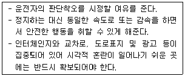
- 종단시거
- 평면시거
- 피주시거
- 앞지르기시거
(정답률: 70%)
56. 교통의 안전과 소통의 원활을 도모하기 위해 설치하는 도로교통정보 안내 시설에 관한 설명으로 틀린 것은?
- 설치 구조 형식에 따라 문형식, 내민식, 부착식 등이 있다.
- 표출 형식에 따라 문자식 표시, 도형식 표지 등이 있다.
- 도로전광표지(픈), 폐쇄회로티비(CCTV), 교통량검지기 등이 있다.
- 문자의 주요 표시내용은 도로, 기상, 교통, 규제상황, 우회의 지시 등으로 간결하고 명료하게 표현하여야 한다.
(정답률: 83%)
57. 측도에 대한 설명으로 틀린 것은?
- 도로의 구조가 성토와 절토로 이루어져 본도로와 고저차가 있어 자동차가 주변으로 출입이 불가능한 경우에 설치한다.
- 고속도로가 지방지역을 통과할 경우에는 교통의 분산이나 합류의 목적으로 측도를 설치하는 것이 바람직하다.
- 고속도로의 경우 측도를 일방통행으로 운영하여 자동차의 고속주행과 함께 토지이용의 효율을 높일 수 있다.
- 계획교통량이 비교적 많은 4차로 이상의 고속도로 또는 간선도로에서 필요에 따라 설치한다.
(정답률: 43%)
58. 중앙분리대의 기능에 관한 설명으로 틀린 것은?
- 비분리 다차로 도로에 있어서 대향차로의 오인을 방지한다.
- 도로표지, 기타 교통관제시설 등을 설치할 수 있는 장소로 제공된다.
- 유턴(U-Turn)을 용이하게 할 수 있어 교통류의 혼잡을 피할 수 있다.
- 광폭 분리대일 경우 사고 및 고장 차량이 정지할 수 있는 여유 공간을 제공한다.
(정답률: 81%)
59. 도로의 기능과 이동성 및 접근성과의 관계를 나타낸 그림에서 ㉡에 해당하는 도로는?
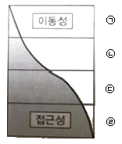
- 고속도로
- 집산도로
- 간선도로
- 국지도로
(정답률: 84%)
60. 길이 1천m 이상의 터널 또는 지하차도에서 오른쪽 길어깨의 폭을 얼마 미만으로 하는 경우에 최소 750m 간격으로 비상주차대를 설치하여야 하는가?
- 3.0m
- 2.5m
- 2.0m
- 1.5m
(정답률: 54%)
4과목: 도시계획개론
61. 기후변화에 대응한 저탄소 도시 조성을 위한 도시관리정책 수단으로 가장 거리가 먼 것은?
- 도시의 외연적 확대를 통한 도시 열섬현상 완화
- 차량 운행 억제를 위한 자동차 관련 규제 강화
- 대충교통 중심 개발 추진
- 용도지역 상한제 적용을 통한 이동거리 감소
(정답률: 67%)
62. 수도권의 인구와 산업을 적정하게 배치하기 위하여 구분한 권역에 해당하지 않는 것은?
- 개발제한권역
- 과밀억제권역
- 성장관리권역
- 자연보전권의
(정답률: 49%)
63. 하워드(E.Howard)가 제시한 전원도시의 조건에 해당하지 않는 것은?
- 토지는 원칙적으로 사유를 인정한다.
- 시가지에는 충분한 오픈 스페이스를 확보한다.
- 시민 경제를 유지할 수 있는 정도의 공업을 유치한다.
- 도시 주변에 식량의 자급자족을 위하여 넓은 농경지를 확보한다.
(정답률: 69%)
64. 다음과 같은 특징을 갖는 국지도로 형태는?
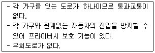
- 환상형
- 격자형
- 루프(loop)형
- 쿨데식(cul-de-sac)형
(정답률: 82%)
65. 도시계획의 역사에 관한 설명으로 틀린 것은?
- 하워드의 전원도시개념은 후에 신도시 개념의 모델이 되었다.
- 하워드의 전원도시 계획안은 방사환상형의 시가지 패턴을 가지고 있다.
- 위성도시의 개념은 중심도시로부터 지리적으로 분리되고 경제적으로 연결된 독립도시이다.
- 도시미화운동은 유럽의 도시계획에 가장 많은 영향을 미친 문화적·환경적인 도시개발 운동이다.
(정답률: 44%)
66. 도시·군계획 시설의 결정·구조 및 설치기준에 관한 규칙에 따른 용도지역별 도로율 기준이 틀린 것은?(오류 신고가 접수된 문제입니다. 반드시 정답과 해설을 확인하시기 바랍니다.)
- 주거지역 : 10% 이상 30% 미만
- 상업지역 : 25% 이상 35% 미만
- 공업지역 : 8% 이상 20% 미만
- 녹지지역 : 5% 이상 10% 미만
(정답률: 46%)
67. 일반적으로 인구의 U-Turn 현상으로 설명되고 있는 개념은?
- 도시화
- 가도시화
- 역도시화
- 현상유지 도시화
(정답률: 88%)
68. 개발밀도관리구역의 지정기준이 틀린 것은?
- 당해 지역의 도로율이 국토교통부령이 정하는 용도지역별 도로율에 20%이상 미달하는 지역
- 향후 2년 이내에 당해 지역의 수도에 대한 수요량이 수도시설의 시설용량을 초과할 것으로 예상되는 지역
- 향후 2년 이내에 당해 지역의 하수발생이 하수시설의 시설용량을 초과할 것으로 예상되는 지역
- 향후 2년 이내에 당해 지역의 학생수가 학교수용능력을 10%이상 초과할 것으로 예상되는 지역
(정답률: 54%)
69. 수출기반모형에 대한 설명이 틀린 것은?
- 시·군 단위의 소단위 지역까지 분석이 가능하여 널리 사용되는 모형이다.
- 수출승수를 몰라도 정책적 파급효과의 분석이 쉽다.
- 수출승수를 구하기 위한 지역 수출량 조사 방법으로 가정법, 입지상법, 최소고용요구량법, 회귀분석법이 있다.
- 지역에서 생산된 제품에 대한 지역 외부의 수요가 지역 경제의 성장을 유도한다는 전제를 바탕으로 한다.
(정답률: 81%)
70. 다음과 가장 관련이 깊은 도시구성형태는?
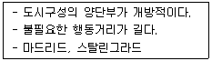
- 선형
- 격자형
- 격자방사형
- 방사환상형
(정답률: 65%)
71. 대중교통지향개발(TOD)에 대한 설명으로 적합하지 않은 것은?
- 토지 이용과 교통 체계 간의 밀접한 상호 영향 관계를 고려하는 계획이다.
- 철도역, 지하철역 또는 버스정류장과 같은 교통 결절점을 중심으로 주거, 상업, 업무 등의 다양한 기능을 배치하도록 하고 있다.
- 도시의 외면적 확산을 촉진하고 승용차의 이용 편리성을 제고하는 데에 목적이 있다.
- 배기가스로 인한 환경오염을 저감하여 도시민의 건강을 증진할 수 있다.
(정답률: 86%)
72. 특별시·광역시·특별자치시·특별자치도·시 또는 군의 관할 구역에 대하여 기본적인 공간 구조와 장기발전방향을 제시하는 종합계획으로서 도시·군 관리계획 수립의 지침이 되는 계획은?
- 광역도시계획
- 용도지역계획
- 지구단위계획
- 도시·군기본계획
(정답률: 73%)
73. 계획이론과 그 내용이 옳은 것은?
- 프리드만의 교류적 계획(transactive planning) - 지속적 조정과 적용을 통하여 계획의 목표를 추구하는 접근방법
- 린드블룸의 점진적 계획(incremental planning) - 체계적 접근방법을 통해 계획의 문제를 구명하고 결정론적 의사결정 과점을 거치는 방식
- 다비도프의 옹호적 계획(advocacy planning) - 다원적인 가치가 혼재하고 있는 사회에서 단일 계획안이 아닌 복수의 단원적 계획을 수립하는 접근방식
- 맨하임의 급진적 계획(radical planning) - 상위 정부에 의하여 계획이 수립되는 접근방식
(정답률: 46%)
74. 인구 100만 이상의 대도시 계획에 적합하며, 횡적인 연결은 환상선으로, 도심부와 교외 및 외곽은 방사선으로 연결하는 형태로 도쿄, 파리가 대표적인 가로망 구성 형태는?
- 격자형
- 방사형
- 방사환상형
- 대각선삽입형
(정답률: 78%)
75. 도시토지이용의 예측 모형인 라우리모형(Lowry Model)에서 공간구조를 분류하는 항목에 해당하지 않는 것은?
- 기반부문(Basic Sector)
- 서비스부문(Service Sector)
- 가계부문(Household Sector)
- 환경부문(Environmental Sector)
(정답률: 56%)
76. 현재 인구가 50만 명인 도시가 있다. 과거 인구추세에 의한 평균 인구증가율이 3%일 때, 등비급수법에 의해 추정한 20년 후의 인구는?
- 약 70만명
- 약 90만명
- 약 110만명
- 약 130만명
(정답률: 74%)
77. 다음 중 도시·군관리계획에 해당하지 않는 것은?
- 개발제한구역의 지정 또는 변경
- 광역계획권의 장기발전방향 수립 또는 변경
- 입지규제최소구역의 지정 또는 변경
- 용도지역·용도지구의 지정 또는 변경
(정답률: 82%)
78. 도시계획과정에서 비용편익분석 또는 비용효과분석을 시행하는 단계는?
- 집행
- 목표의 설정
- 대한의 설정 및 평가
- 상황의 분석 및 미래의 예측
(정답률: 60%)
79. 공동구에 관한 설명으로 틀린 것은?
- 가로와 도시의 미관을 개선할 수 있다.
- 노면 내구력이 감소하여 노면유지비가 증대된다.
- 빈번한 노면굴착의 방지로 교통장애를 제거 할 수 있다.
- 수용 시설의 유지관리가 용이하다.
(정답률: 73%)
80. 도시·군계획시설로서 국지도로에 대한 정의가 옳은 것은?
- 도로로 둘러싸인 일단의 지역인 가구를 구획하는 도로
- 시·군 교통의 집산기능을 하는 도로로서 근린주거구역의 외곽을 형성하는 도로
- 근린주거구역의 교통을 보조간선도로에 연결하는 도로로서 근린주거구역의 내부를 구획하는 도로
- 보행자전용도로·자전거전용도로 등 자동차 외의 교통에 전용되는 도로
(정답률: 54%)
5과목: 교통관계법규
81. 대중교통의 육성 및 이용촉진에 관한 법률의 정의에 따른 ‘간선급행버스체계’의 구성요소에 포함되지 않는 것은?
- 편리한 환승시설
- 교차로에서의 버스우선통행
- 교통카드전용결제시스템
- 버스전용차로
(정답률: 70%)
82. 도로교통법령상 모든 차의 운전자가 다른 차를 앞지르지 못하는 장소에 해당하는 것은? (단, 지방경찰청장이 필요하다고 인정하여 안전표지로 지정한 곳은 고려하지 않는다.)
- 다리 위
- 터널 밖
- 자동차 전용도로
- 지방지역 도로
(정답률: 84%)
83. 신호등의 성능 기준에 관한 아래의 설명에서 ( )안의 내용이 모두 옳은 것은?
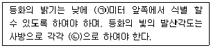
- ㉠ 120 ㉡ 30도 이상
- ㉠ 130 ㉡ 30도 이상
- ㉠ 140 ㉡ 45도 이상
- ㉠ 150 ㉡ 45도 이상
(정답률: 67%)
84. 도시교통정비 촉진법령상 도시교통정비지역에서 기본계획·중기계획 및 시행계획과 조화를 이루도록 하여야 하는 계획으로 규정되어 있지 않은 것은?
- 도시·군기본계획
- 도시·군계획시설계획
- 도로건설·관리계획
- ‘도시철도법’제5조에 따른 도시철도망구축계획
(정답률: 48%)
85. 도로법상 도로관리청은 소관 도로의 경계선에서 얼마를 초과하지 아니하는 범위에서 접도구역을 지정할 수 있는가? (단, 고속국도의 경우는 제외한다.)
- 50m
- 40m
- 30m
- 20m
(정답률: 60%)
86. 국가통합교통체계효율화법상 타당성 평가서를 작성하는 평가 대행자의 준수사항으로 틀린 것은?
- 다른 타당성 평가서의 주요 내용을 무단으로 복제하여 작성하여서는 아니 된다.
- 타당성 평가서 작성의 기초가 되는 자료를 거짓으로 작성하여서는 아니 된다.
- 교사조사지침 또는 투자평가지침의 내용과 다르게 혁신적으로 교통 수용을 조사·분석하거나 예측하여야 한다.
- 국가교통 데이터베이스와 국가교통조사서를 기초자료로 교통 수요를 예측하여야 한다.
(정답률: 84%)
87. 도로법령상 도로와 다른 시설의 교차 방법에 관한 아래 내용에서 ( )에 들어갈 내용으로 옳은 것은?
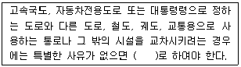
- 신호교차시설
- 입체교차시설
- 평면교차시설
- 회전식교차시설
(정답률: 74%)
88. 교통안전에 관한 국가 또는 지방자치단체의 의무·추진체계 및 시책 등을 규정하고 이를 종합적·계획적으로 추진함으로써 교통안전증진에 이바지함을 목적으로 하는 법은?
- 교통안전법
- 도로교통법
- 도시교통정비촉진법
- 국가통합교통체계효율화법
(정답률: 68%)
89. 대도시권 광역교통에 관한 업무를 수행하기 위하여 국토교통부 소속으로 두는 대도시권광역교통위원회의 소관 업무가 아닌 것은? (단, 그 밖에 광역교통위원회가 필요하다고 인정하는 사항은 고려하지 않는다.)
- 광교통수단과 연계된 환승 요금의 요율 및 기준에 관한 사항
- 광역교통시설에 대한 재정 지원 관한 사항
- 광역교통시설 부담금에 관한 사항
- 대도시권 광역교통기본계획의 수립
(정답률: 39%)
90. 국가통합교통체계효율화법에서 하나 또는 둘 이상의 교통수단을 이용하여 대규모 여객 또는 화물의 연계운송·환승·환적·하역·보관 등 주요 교통물류활동이 이루어지고 있는 공항·항만·철도역·터미널·산업단지 등 주요 근거지를 뜻하는 것은?
- 교통물류거점
- 환승지원시설
- 물류환승거점
- 복합환승센터
(정답률: 51%)
91. 국토교통부장관은 몇 년의 범위에서 교통 분야별 지능형교통체계의 계획을 수립하여야 하는가?
- 10년
- 7년
- 5년
- 3년
(정답률: 47%)
92. 도시교통정비 기본계획의 시행 및 도시교통개선에 필요한 재원을 확보하고, 효율적으로 운용·관리하기 위하여 설치하는 지방도시 교통사업특별회계의 세입원이 아닌 것은? (단, 그 밖에 도시교통과 관련한 수입은 고려하지 않는다.)
- 혼잡통행료
- 교통유발부담금
- 일반회계로부터의 전입금
- 자동차 운행제한 위반 과태료
(정답률: 59%)
93. 주차장법상 용어의 정의가 틀린 것은?
- 노상주차장 : 도로의 노면 및 교통광장 외의 장소에 설치된 주차장으로서 일반의 이용에 제공되는 것
- 기계식주차장 : 기계식주차장치를 설치한 노외주차장 및 부선주차장
- 주차단위구획 : 자동차 1대를 주차할 수 있는 구획
- 기계식주차장치 보수업 : 기계식주차장치의 고장을 수리하거나 고장을 예방하기 위하여 정비를 하는 사업
(정답률: 78%)
94. 국가교통안전기본계획의 원칙적인 수립권자와 수립기간 기준이 모두 옳은 것은?
- 지방경찰청장, 3년 단위
- 국토교통부장관, 5년 단위
- 지방경찰청장, 5년 단위
- 국토교통부장관, 3년 단위
(정답률: 83%)
95. 주차장법상 노외주차장인 주차전용건축물의 건축 제한 기준이 틀린 것은?
- 건폐율 : 100분의 90이하
- 용적률 : 1천 500퍼센트 이상
- 대지면적의 최소한도 : 45제곱미터 이상
- 대지가 너비 12m 미만의 도로에 접하는 경우 높이 제한 : 건축물의 각 부분의 높이는 그 부분으로부터 대지에 접한 도로의 반대쪽 경계선까지의 수평거리의 3배 이하
(정답률: 59%)
96. 기계식주차장의 설치기준에 관하여 아래 ( )에 공통으로 들어갈 내용이 옳은 것은?
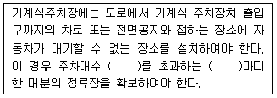
- 10대
- 20대
- 30대
- 50대
(정답률: 55%)
97. 대중교통을 체계적으로 육성·지원하고 국민의 대중교통수단 이용을 촉진하기 위하여 필요한 사항을 규정함으로써 국민의 교통편의와 교통체계의 효율성을 증진함을 목적으로 하는 법률은?
- 교통안전법
- 교통약자의 이동편의법
- 국가통합교통체계 효율화법
- 대중교통의 육성 및 이용촉진에 관한 법률
(정답률: 68%)
98. 도로교통법규상 안전표지의 종류를 모두 옳게 나열한 것은?
- 주의표지, 규제표지, 지시표지, 보조표지, 노면표지
- 주의표지, 규제표지, 지시표지, 안내표지, 노면표지
- 주의표지, 규제표지, 지시표지, 보조표지, 금지표지
- 주의표지, 규제표지, 지시표지, 안내표지, 금지표지
(정답률: 74%)
99. 도시교통정비 촉진법에 따라 도시교통정비 기본계획 수립을 위해 실시하는 기초조사의 내용에 포함되지 않는 것은?
- 인구 등 사회·경제 지표 현황 및 전망
- 자동차 보유 현황 및 증가 추세
- 간선도로 및 교차로에서의 교통량 현황과 그 변화 추이
- 교통 혼합지역의 현황·원인 및 대책
(정답률: 44%)
100. 도로법상 정의하는 ‘도로의 부속물’중 도로이용지원시설에 해당하지 않는 것은?
- 주차장
- 도로표지
- 휴게시설
- 버스정류시설
(정답률: 49%)
6과목: 교통안전
101. 야간사고가 많이 발생하는 지점에 대한 개선대책으로 가장 거리가 먼 것은?
- 가로조명 설치
- 시선유도표지 설치
- 미끄럼 방지 노면포장
- 반사도가 높은 특수노면표지 설치
(정답률: 87%)
102. 상층조사(conflict studies)의 목적으로 거리가 먼 것은?
- 교통사고로 인한 소통 문제구간을 파악하기 위해 실시한다.
- 상풍을 이용하여 사고의 위험성을 평가하기 위해 실시한다.
- 사전·사후조사를 통한 교통안전개선사업의 효과를 분석하기 위해 실시한다.
- 도로의 문제 지점에서 기하설계요소를 평가하기 위해 실시한다.
(정답률: 27%)
103. 교통사고 자료 수집 시 일반적인 고려사항으로 가장 거리가 먼 것은?
- 도로교통사고 조사 양식은 주기적으로 타당성을 검토하는 것이 바람직하다.
- 교통사고조사 양식은 가급적 코드화하여 조사자에 따라 내용이 달라질 수 있는 여지를 줄이는 것이 좋다.
- 도로교통사고 자료는 가급적 지리정보체계(GIS)를 통해 관리하여 향후 활용성을 높이는 것이 바람직하다.
- 교통사고 발생장소에 대한 위치정보는 X,Y자표보다 도로명 주소를 활동하여 기입하는 것이 향후 교통사고자료를 활용할 때 더욱 편리하다.
(정답률: 79%)
104. 교통사고의 발생요인인 운전자에 관한 설명으로 틀린 것은?
- 운전자는 정보처리과정에서 단지 수동적 요소다.
- 운전자는 자신의 선택에 의하여 운전의 스트레스를 감소 또는 증가시키기도 한다.
- 운전자에 대한 환경적 요구는 시간에 따라 변한다.
- 운전자의 능력은 시간에 따라 변한다.
(정답률: 82%)
1⑤. 과속방지턱의 주요 설치 목적이 아닌 것은?
- 통행안전성 향상
- 과속주행 방지
- 보행자 무단횡단 억제
- 통과차량 진입 억제
(정답률: 85%)
106. 평균사고율이 3.5건/MVK이고 분석기간동안이 구간의 사고율이 4.1MVK/백만차량·km일 때, 95% 신뢰수준이 한계사고율은 약 얼마인가?
- 5.01건/MVK
- 5.14건/MVK
- 5.42건/MVK
- 5.90건/MVK
(정답률: 31%)
107. 자동차가 주행할 때 타이어의 공기압이 적은 상태이면 타이어 접지면이 압축되어 변형하면서 회전하여 타이어가 물결치는 모양이 되는 현상은?
- 스키드 현상
- 드라이브 현상
- 스탠딩 웨이브 현상
- 하이도로플래닝 현상
(정답률: 90%)
108. 높은 사고발생빈도를 갖는 지점의 다음 해의 사고 발생빈도를 측정해보면 그 전년에 비해 낮게 나타난다. 이것은 교통사고가 가장 많이 발생한 해에 그 지점이 사고다발지점으로 선정되고, 어느 지점의 사고발생률이 매년 높아졌다 낮아졌다하는 변화를 하기 때문인데 이러한 현상을 무엇이라고 하는가?
- 사고 이동(Accident Migration)
- 위험 보정(Risk Compensation)
- 위험 회피(Threaten Avoidance) 이론
- 평균으로서의 회귀(Regression-to-Mean)효과
(정답률: 67%)
109. 도로표지의 설치기준에 대한 설명으로 옳지 않은 것은?
- 글자, 기호 및 바탕은 밤에도 잘 읽을 수 있도록 한다.
- 도로이용자의 주의를 끌 수 있도록 뚜렷하여야 한다.
- 여류로운 설치 공간 확보를 위해 곡선구간, 절토면에 설치한다.
- 도로이용자가 가고자 하는 방향을 결정할 수 있는 거리에서 읽을 수 있는 크기이어야 한다.
(정답률: 84%)
110. 교차로의 노면이 미꺼러워 발생하는 사고를 개선하기 위한 방법으로 틀린 것은?
- 장애물 제거
- 노면 재포장
- 미끄럼방지포장 설치
- 배수시설 재조정
(정답률: 76%)
111. 요 마크(yaw mark)를 이용한 차량의 제동 시속 속도 추정에서 이용하는 요소가 아닌 것은?
- 편경사
- 횡방향 마찰계수
- 사고차량의 중량
- 요 마크의 곡선 반경
(정답률: 79%)
112. 교통사고분석 중 가장 단순하고 직접적인 방법으로서 교통량이 적은 지방부 도로에 효과적이고, 교통량의 많고 적음에 따른 요인을 고려하지 않는 분석 방법은?
- 사고건수법
- 사고율법
- 사고건수-율법
- 율-품질관리법
(정답률: 86%)
113. 교통사고 유발요인을 인적 요인, 차량 요인, 환경적 요인으로구분할 때, 다음 중 환경적 요인에 해당하지 않는 것은?
- 운전습관
- 교통조건
- 도로상태
- 자연환경
(정답률: 85%)
114. 연평균 5건의 교통사고가 발생하는 교차로에 1년 동안 3건 이상의 교통사고가 발생할 확률은? (단, 일정 기간 동안 교통사고가 발생할 확률은 포아송 분포를 따른다고 가정한다.)
- 약 65.5%
- 약 76.5%
- 약 87.5%
- 약 98.5%
(정답률: 59%)
115. 차량이 도로를 벗어나 도로의 맨 끝으로부터 거리 30m, 높이 20m의 지점에 추락하였다면 추락할 때의 이 차량의 속도는 얼마인가?
- 41.26km/h
- 48.46km/h
- 53.46km/h
- 57.54km/h
(정답률: 79%)
116. 사고의 많은 요인들 중 하나라도 없다면 연쇄반응은 없으며, 교통사고도 일어나지 않을 것이라고 하는 원리는?
- 사고의 단일성 원리
- 사고의 등치성 원리
- 사고의 복합성 원리
- 사고의 연결성 원리
(정답률: 50%)
117. 어두운 터널에서 바깥의 밝은 곳으로 나올 때 잠시 눈이 부셨다가 곧 회복되는 반응은?
- 난시
- 색약
- 명순응
- 암순응
(정답률: 80%)
118. 교통안전법 시행령상 교통행정기관이 교통시설안전진단을 받을 것을 명할 때에는 교통시설안전 진단을 받아야 하는 날부터 며칠 전까지 교통시설설치·관리자에게 이를 통보하여야 하는가? (단, 긴급하게 교통시설안전진단을 받을 필요가 있다고 인정되는 경우는 고려하지 않는다.)
- 50일
- 30일
- 10일
- 7일
(정답률: 71%)
119. 어느 차량이 평탄한 도로를 주행하다 급정거하여 충돌 없이 정지하였다. 이 차량은 연속적으로 두 번의 스키드마크를 남겼다. 첫 번째 스키드마크의 길이가 20m, 차량의 제동직전 주행속도가 80km/h이었을 때, 두 번째 스키드마크의 길이는 약 얼마인가? (단, 타이어와 노면의 마찰계수는 0.7이다.)
- 16m
- 27m
- 52m
- 80m
(정답률: 68%)
120. 도로교통안전을 강화하기 위해 사용하는 3E에 포함되지 않는 것은?
- 교육(Eduction)
- 공학(Engineering)
- 단속(Enforcement)
- 효율(Efficiency)
(정답률: 83%)
원단위법은 단기간의 주차수요나 주차특성이 유사한 건물의 주차수요를 추정하는데 높은 신뢰성을 갖는다. 따라서, "장기간"이라는 표현이 틀린 것이다.
이유는 원단위법은 건물의 크기, 용도, 위치, 인구밀도 등의 변수를 고려하여 건물 단위로 주차수요를 추정하는 방법이기 때문이다. 이에 반해, 장기간의 주차수요나 주차특성을 추정하는 방법은 다른 방법들이 사용되며, 예를 들어, p계수법이나 누적주차대수법 등이 있다.